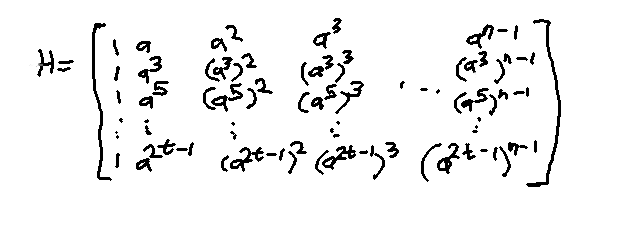
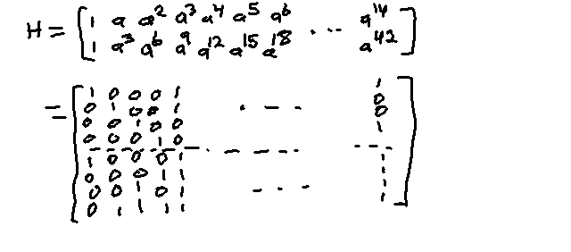

Chapter 6 - Binary BCH Codes
Properties
For any m >= 3, t < 2m-1
Block Length: n = 2m -1
# parity check bits: n - k < m*t
Min distance: dmin >= 2t + 1
Corrects up to t errors; called a "t error correcting BCH Code"
Generator Polynomial
The generator g(X) is the lowest degree polynomial in GF(2m )
which has a,a2 ,a3 ,a4 ,...a2t
as its roots
g(X) = LCM{Q1 (X),Q3 (X),...Q2t -1 (X)}
(Least Common Multiple)
Qi (X) is the min polynomial for ai
Parity Check Matrix
Format:

BCH Parity Matrix format. a...a2t -1
are the valid codewords under GF(2m ) formed by the given primitive
generator polynomial p(X).
Example: Parity check matrix for n = 24 - 1, t = 2, p(X) = 1+X+X4

The values for a,a2 ,... were taken from
table 2.8. See chapter 2 for a refresh on how to form the GF(24 )
from the given primitive generator polynomial p(X), which is how table 2.8
was formed.
Alternative Syndrome Calculation
As usual, S=(S1 ,S2 ,S3 ...S2t ) = r *H t
However, they can also be computed via the following:
Si = b i (X), where
b i (X) is the remainder of r(X) / min_poly(ai )
See chapter two for a refresher of calculting the min polynomial ai is the power representation of the ith codeword in the BCH code
Decoding BCH Codes
Compute syndrome S = (S1,S2,S3,...S2t) from received r
Determine Error Polynomial σ(X) from S
Find error location numbers β1,β2,...βv, by finding the roots of σ(X)
Error location polynomial σ(X)
σ(X) = σ0 + σ1 X + σ2 X2 ... σv Xv , where v is the number of errors
Needs to be calculated; hardest step of decoding. One way to calculate it is Berlkamp
Iterative Algorithm
Berlekamp Iterative Algorithm
Find the minimum degree polynomial σμ=1 (X) satisfying Newton's μth identity (identities below) for the first iteration, μ = 1
S1 + σ1 = 0
S2 + σ1 S1 + 2σ2 = 0
S3 + σ1 S2 + σ2 S1 + 3σ3 = 0
...
Sμ + σ1 Sμ-1 + ... + σμ-1 S1 + μσμ = 0
For binary, iσi = σi if i is odd, else 0 if i is even
Test if σμ=1 (X) also satisfies the second identity
S2 + σ1 S1 + 2σ2 = 0
If true, then set σμ=2 (X) equal to σμ=1 (X)
Else add a correction (from a previously calculated σ(X)) to σμ=2 (X) so that the second identity is
satisfied
σμ+1 (X) = σμ (X) + dμ
dp -1 Xμ-p σp (X)
dμ = Sμ+1 + σ1
μ Sμ + σ2 μ Sμ-1
+ ... σlμ μ Sμ+1-lμ
d is called the discrepancy
p is the iteration number where dμ is not 0 and p - lp
has the largest value (lp is the degree of σp (X))
Repeat until we have σμ=2t (X); this is our error location polynomial
σ(X)
Keep track using a table, which 2 previous starting entries:
μ σμ (X) dμ lμ μ-lμ -1 1 1 0 -1 0 1 S1 0 0 1 2 ... 2t
BCH Decoding Example
(15,5) triple-error-correcting (t=3) BCH code from example 6.1, generator p(X) = 1 + X + X4
v = (0000000000000000)r = (0001010000000100) = X3 + X5 + X12 Calculate Syndrome: Calculate minimal polynomials
φ(a) = φ(a2 ) = φ(a4 ) = φ(a8 ) =
1 + X + X4
φ(a3 ) = φ(a6 ) = φ(a12 ) =
(X+a3 )*(X+(a3 )2 )*(X+(a3 )4 )*
(X+(a3 )8 )
= (X+a3 )*(X+a6 )*(X+a12 )*(X+a24 )
= (X+a3 )*(X+a6 )*(X+a12 )*(X+a9 )
// 24 MOD 15 == 9
= (X2 + (a6 + a3 )X + a9 ) *
(X2 + (a9 + a12 )X + a6 )
= (X2 + (a2 + a3 + a3 )X + a9 ) *
(X2 + (a + a3 + 1 + a + a2 + a3 )X + a6 ) // substitute from table 2.8 (polynomial representations)
= (X2 + a2 X + a9 ) *
(X2 + a8 X + a6 )
= X4 + a8 X3 + a6 X2 +
a10 X2 + a2 X3 + a8 X
+ a9 X2 + a17 X + a15
= X4 + (a8 + a2 )X3
+ (a6 + a10 + a9 )X2
+ (a8 + a17 )X
+ 1
= X4 + (1 + a2 + a2 )X3
+ (a2 + a3 + 1 + a + a2 + a + a3 )X2
+ (1 + a2 + a2 )X
+ 1
= X4 + (1)X3
+ (1)X2
+ (1)X
+ 1
= X4 + X3 + X2 + X + 1
φ(a5 ) = φ(a10 ) =
(X+a5 )*(X+(a5 )2 )
(stop here since a20 MOD 15 = a5 )
(X + a5 )*(X + a10 )
= X2 + (a10 + a5 )X + a5 a10
= X2 + (1 + a + a2 + a + a2 )X + a15
= X2 + X + 1
Syndrome will be of length 6 (2t, t=3 since triple error correcting), so need min polys up to a6
Calculate syndrome: Divide r by min polynomials to get remainders
(X3 + X5 + X12 ) / (1 + X + X4 )
= X8 + X5 + X4 + X2 + X + 1
remainder b 1 (X) = b 2 (X) = b 4 (X) = 1
(X3 + X5 + X12 ) /
(1 + X + X2 + X3 + X4 )
= X8 + X7 + X3 + X2 + X + 1
remainder b 3 (X) = b 6 (X)
= X3 + X2 + 1
(X3 + X5 + X12 ) /
(1 + X + X2 )
= X10 + X9 + X7 + X6 + X4
+ X2
Calculate Syndromes: plug a...a6 into remainders
b1 (a)
= b2 (a2 )
= b4 (a4 ) = 1 = S1,S2,S4
b3 (a3 ) = S3
= 1 + (a3 )2 + (a3 )3
= 1 + a6 + a9
= 1 + a2 + a3 + a + a3
= 1 + a + a2
= a10
b6 (a6 ) = S6
= 1 + (a6 )2 + (a6 )3
= 1 + a12 + a18
= 1 + 1 + a + a2 + a3 + a3
= a + a2
= a5
b5 (a5 ) = S5
Berlekamp Iterative Algorithm
Start with base table as described earlier
μ σμ (X) dμ lμ μ-lμ -1 1 1 0 -1 0 1 S1 =1 0 0 1 2 ... 2t
Next, calculate using μ = 0
dμ=0 = 1, so need to pick prev. row p
p = -1 since only previous row (meets criteria that dp =/= 0
with highest μ - lμ val)
Calculate σμ+1 (X) = σμ (X)
+ dμ dp -1 Xμ-p
σp (X)
= σ0 (X) + 1(1-1 )X0-(-1)
σ-1 (X)
= 1 + 1(1)X1 (1)
= 1 + X
Calculate lμ+1=1 =max(lμ ,lp +μ-p)
Calculate dμ+1=1 = Sμ+2
+ σ1 μ+1 Sμ+1 ...
+ σlμ+1 μ+1
Sμ+2-lμ+1
Calculate the lowest Si used to figure out when to stop
μ+2-lμ+1 = 0+2-1=1, so the last S is
S1 = Sμ+1 (since μ=0)
Sμ+2 + σ1 μ+1 Sμ+1
Fill in the next row μ+1 = 1 with the calculated values
μ σμ (X) dμ lμ μ-lμ -1 1 1 0 -1 0 1 S1 =1 0 0 1 1 + X 0 1 0 2 ... 2t
Next, calculate using μ = 1
dμ=1 = 0, so σμ (X) matches our next
Newton's identity criteria
Set σμ+1 (X) = σμ (X) = 1 + X
Set lμ+1 = lμ = 1
Calculate dμ+1=1 = Sμ+2
+ σ1 μ+1 Sμ+1 ...
+ σlμ+1 μ+1
Sμ+2-lμ+1
Calculate the lowest Si used to figure out when to stop
μ+2-lμ+1 = 1+2-1=2, so the last S is
S2 = Sμ+1 (since μ=1)
Sμ+2 + σ1 μ+1 Sμ+1
= a10 + 1(1)
= 1 + a + a2 + 1
= a + a2
= a5
Fill in the next row μ+1 = 2 with the calculated values
μ σμ (X) dμ lμ μ-lμ -1 1 1 0 -1 0 1 S1 =1 0 0 1 1 + X 0 1 0 2 1 + X a5 1 1 ... 2t
Next, calculate using μ = 2
dμ=2 = a5 , so need to pick previous row p
p = 0 since non-zero dμ with highest
μ-lμ
Calculate σμ+1 (X) = σμ (X)
+ dμ dp -1 Xμ-p
σp (X)
= σ2 (X) + a5 (1-1 )X2
(1)
= 1 + X + a5 X2
Calculate lμ+1=3 =max(lμ ,lp +μ-p)
Calculate dμ+1=1 = Sμ+2
+ σ1 μ+1 Sμ+1 ...
+ σlμ+1 μ+1
Sμ+2-lμ+1
Calculate the lowest Si used to figure out when to stop
μ+2-lμ+1 = 2+2-2=2, so the last S is
S2 = Sμ (since μ=2)
Sμ+2 + σ1 μ+1 Sμ+1
+ σ2 μ+1 Sμ+2-2
= 1 + 1(a10 ) + a5 (1)
= 1 + a10 + a5
= 1 + (1 + a + a2 ) + (a + a2 )
= 0
Fill in the next row μ+1 = 3 with the calculated values
μ σμ (X) dμ lμ μ-lμ -1 1 1 0 -1 0 1 S1 =1 0 0 1 1 + X 0 1 0 2 1 + X a5 1 1 3 1 + X + a5 X2 0 2 1
μ = 3
dμ=3 = 0, so next Newton identity satisfied
Set σμ+1 (X) = σμ (X)
= 1 + X + a5 X2
Set lμ+1 = lμ = 2
Calculate dμ+1=1 = Sμ+2
+ σ1 μ+1 Sμ+1 ...
+ σlμ+1 μ+1
Sμ+2-lμ+1
Calculate the lowest Si used to figure out when to stop
μ+2-lμ+1 = 3+2-2=3, so the last S is
S3 = Sμ (since μ=3)
Sμ+2 + σ1 μ+1 Sμ+1
+ σ2 μ+1 Sμ+2-2
= a10 + 1(1) + a5 (a10 )
= 1 + a + a2 + 1 + a15
= 1 + a + a2
= a10
Fill in the next row μ+1 = 4 with the calculated values
μ σμ (X) dμ lμ μ-lμ -1 1 1 0 -1 0 1 S1 =1 0 0 1 1 + X 0 1 0 2 1 + X a5 1 1 3 1 + X + a5 X2 0 2 1 4 1 + X + a5 X2 a10 2 2
μ = 4
dμ=4 = a10 , not 0/next newton not satisfied
Calculate σμ+1 (X) = σμ (X)
+ dμ dp -1 Xμ-p
σp (X)
= σ4 (X) + a10 ((a5 )-1 )X2
(1+X)
= (1 + X + a5 X2 ) + (a10 /a5 )X2 (1+X)
= (1 + X + a5 X2 ) + (a10-5 )X2 (1+X)
= 1 + X + a5 X2 + a5 X2 +
a5 X3
= 1 + X + a5 X3
Calculate lμ+1=5 =max(lμ ,lp +μ-p)
Calculate dμ+1=1 = Sμ+2
+ σ1 μ+1 Sμ+1 ...
+ σlμ+1 μ+1
Sμ+2-lμ+1
Calculate the lowest Si used to figure out when to stop
μ+2-lμ+1 = 4+2-3=3, so the last S is
S3 , however S starts at 6 this time (μ+2) so
there are 4 entries
Sμ+2 + σ1 μ+1 Sμ+1
+ σ2 μ+1 Sμ+0
+ σ3 μ+1 Sμ+2-3
= a5 + 1(a10 ) + 0(1) + a5 a10
= a5 + a10 + a15
= a5 + a10 + 1
= a + a2 + 1 + a + a2 + 1
= 0
Fill in the next row μ+1 = 5 with the calculated values
μ σμ (X) dμ lμ μ-lμ -1 1 1 0 -1 0 1 S1 =1 0 0 1 1 + X 0 1 0 2 1 + X a5 1 1 3 1 + X + a5 X2 0 2 1 4 1 + X + a5 X2 a10 2 2 5 1 + X + a5 X3 0 3 2
μ = 5 = 2t-1 (last calculation)
dμ=5 = 0, so σμ (X) satisfies the next
Newton identity
Set σμ+1 (X) = σμ (X)
= 1 + X + a5 X3
This is our final result, the error location polynomial
Final resulting table
μ σμ (X) dμ lμ μ-lμ -1 1 1 0 -1 0 1 S1 =1 0 0 1 1 + X 0 1 0 2 1 + X a5 1 1 3 1 + X + a5 X2 0 2 1 4 1 + X + a5 X2 a10 2 2 5 1 + X + a5 X3 0 3 2 6 1 + X + a5 X3 - - -
Calculate the roots of σ(X)
Chapter 2 literally suggests plugging in all power representations in the code for X
and seeing which ones result in 0
σ(X) = 1 + X + a5 X3
σ(0) = 1 + 0 + a5 (0)3 = 1
σ(1) = 1 + 1 + a5 (1)3 = a6
σ(a) = 1 + a + a5 a3 = 1 + a + a8 = 1 + a + 1 + a2 = a + a2
σ(a2 ) = 1 + a2 + a5 (a2 )3 = 1 + a2 + a11 = 1 + a2 + a + a2 + a3 = 1 + a + a3
σ(a3 ) = 1 + a3 + a5 (a3 )3 = 1 + a3 + a14 = 1 + a3 + 1 + a3 = 0 (found a root!)
σ(a4 ) = 1 + a4 + a5 (a4 )3 = 1 + a4 + a17 = 1 + 1 + a + a2 = a + a2
...
Resulting roots for σ(X) = 0 are a3 , a5 , a12
Take the inverses of te roots, whose powers are the error location numbers
(a3 )-1 = a15-3 = a12
(a10 )-1 = a15-10 = a5
(a12 )-1 = a15-12 = a3
Add the error locations to the received vector to get the final decoded word
r(X) + e(X) = (X3 + X5 + X12 ) + (X12 + X5 + X3 ) = 0 = (0000000000000) = original codeword v(X)
Simplified Berlekamp Iterative Algorithm
For binary BCH, the number of iterations can be reduced to t instead of 2t
by only calculating even iterations
Calculating the next row (μ+1) of the table is as follows:
If dμ = 0, then σμ+1 = σμ (X)
Else pick previous row p where 2p-lp is greatest and dp =/= 0
Then calculate σμ+1 (X) = σμ (X) +
dμ dp -1 X2(μ-p) σp (X)
lμ+1 = the degree of σμ+1
dμ+1 = S2μ+3 + σ1 μ+1 S2μ+2 +
σ2 μ+1 S2μ+1 + ...
σlμ+1 μ+1 S2μ+3-lμ+1
The difference value in the last column is 2μ-lμ
The starting table is
μ σμ (X) dμ lμ 2μ-lμ -1/2 1 1 0 -1 0 1 S1 0 0 1 2 ... t
Additionally, the algorithm can terminate early if
Given μ, dμ
For the next i=ceil((t-lμ -1)/2) steps
If all di discrepancy values are 0, then σμ (X)
is the next error location polynomial
Example of simplified Berlekamp Iterative Alg. for binary BCH
Using same (15,5), t=3 BCH example above
v ,r are still the sameThe syndromes are still the same
The starting table is now
μ σμ (X) dμ lμ 2μ-lμ -1/2 1 1 0 -1 0 1 S1 =1 0 0 1 2 ... t
μ = 0
dμ = 1, not zero, so find p
p = -1/2 since only other row currently
σμ+1=1 (X) = σμ=0 (X) +
dμ=0 dp=-1/2 -1 X2(μ-p=1/2) σp=-1/2 (X)
= 1 + 1(1-1 )X1 (1)
= 1 + X
lμ+1 = degree(σμ+1 (X)) = 1
dμ+1 = S2μ+3 + σ1 μ+1 S2μ+2 +
σ2 μ+1 S2μ+1 + ...
σlμ+1 μ+1 S2μ+3-lμ+1
Calculate last i used for Si
= 2μ + 3 - lμ+1
= 2(0) + 3 - 1
= 2
So dμ+1 = S3 + σ1 μ+1 S2
= a10 + 1(1)
= 1 + a + a2 + 1
= a5
Fill in the table with our new data
μ σμ (X) dμ lμ 2μ-lμ -1/2 1 1 0 -1 0 1 S1 =1 0 0 1 1 + X a5 1 1 2 ... t
μ = 1
dμ = a5 , not zero, so find p
p = 0 since largest 2μ-lμ with non-zero discrepancy
σμ+1=2 (X) = σμ=1 (X) +
dμ=1 dp=0 -1 X2(μ-p=1) σp=0 (X)
= (1 + X) + (a5 )(1-1 )X2 (1)
= 1 + X + a5 X2
lμ+1 = degree(σμ+1 (X)) = 2
dμ+1 = S2μ+3 + σ1 μ+1 S2μ+2 +
σ2 μ+1 S2μ+1 + ...
σlμ+1 μ+1 S2μ+3-lμ+1
Calculate last i used for Si
= 2μ + 3 - lμ+1
= 2(1) + 3 - 2
= 3
So dμ+1 = S3
Fill in the table with our new data
μ σμ (X) dμ lμ 2μ-lμ -1/2 1 1 0 -1 0 1 S1 =1 0 0 1 1 + X a5 1 1 2 1 + X + a5 X2 a10 2 2 ... t
μ = 2
dμ = a10 , not zero, so find p
p = 1 since largest 2μ-lμ with non-zero discrepancy
σμ+1=3 (X) = σμ=2 (X) +
dμ=2 dp=1 -1 X2(μ-p=1) σp=1 (X)
= (1 + X + a5 X2 ) +
a10 (a5 )-1 X2 (1+X)
= 1 + X + a5 X2 + a10-5 X2 (1 + X)
= 1 + X + a5 X2 + a5 X2 (1 + X)
= 1 + X + a5 X2 + a5 X2 + a5 X3
= 1 + X + a5 X3
lμ+1 = degree(σμ+1 (X)) = 3
End here since σμ+1=3(X) is the final error location polynomial,
since t=3
Fill in the table with our new data
μ σμ (X) dμ lμ 2μ-lμ -1/2 1 1 0 -1 0 1 S1 =1 0 0 1 1 + X a5 1 1 2 1 + X + a5 X2 a10 2 2 3 1 + X + a5 X3 - - -
Finding roots of σμ=3 (X) is the same as before, and our final error location
polynomial is the same as before, so our final result is
e(X) + r(X) = (X3 + X5 + X12 ) +
(X12 + X5 + X3 ) = 0 = (0000000000000) = original codeword v(X)
Improved error location calculation (instead of 'finding roots of σ(X)')
Given r(X), σ(X)
For rn-1 , test if an-1 is an error location number
1 + σ1 a + σ2 a2 + ... + σv av = 0
σ1 a,σ2 a2 , ... are pre calculated
If sum is not zero then rn-1 not an error digit
Circuit for this given in figure 6.1